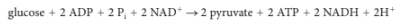
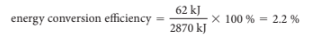
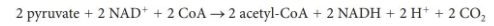
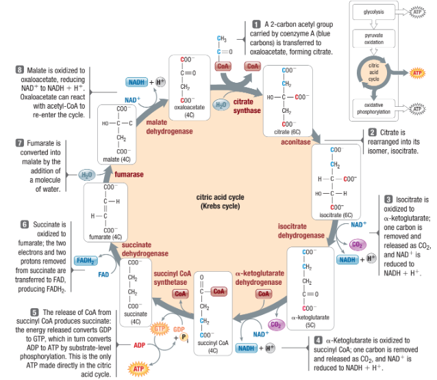
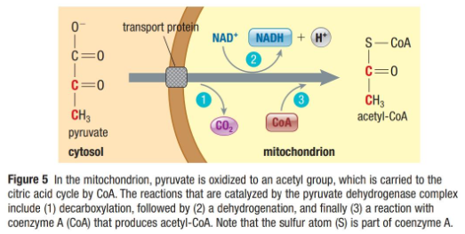
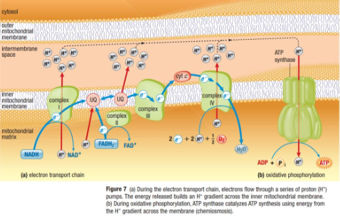
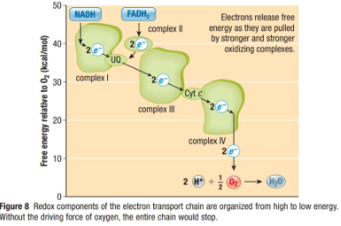

Aerobic Respiration
Callout
GLYCOLYSIS
Glycolysis is the first set of reactions for extracting energy from sugar molecules. It is considered to be the most fundamental and probably most ancient of all metabolic pathways. This is supported by the following facts.
-
Glycolysis is nearly universal, being found in almost all organisms, both prokaryotes and eukaryotes, from all branches of the tree of life.
-
It does not require O2. Oxygen became abundant in Earth’s atmosphere only about 2.5 billion years ago—about 1.5 billion years after scientists think that life began.
-
Third, glycolysis occurs in the cytosol of all cells and involves soluble enzymes. Therefore, it does not require more sophisticated cellular organelles in order to operate.
The Reactions of Glycolysis
Glycolysis consists of 10 sequential enzyme-catalyzed reactions that lead to the oxidation of the 6-carbon sugar glucose, producing two molecules of the 3-carbon compound pyruvate. The potential energy and electrons released in the oxidation leads to the overall synthesis of both ATP and NADH.
Glycolysis has two phases:
-
an initial energy investment phase
-
an energy payoff phase
Both the initial energy investment phase and the energy payoff phase have five steps


Net Equation for Glycolysis

Glycolysis energy conversion efficiency (per mole of glucose processed):

PYRUVATE OXIDATION & CITRIC ACID CYCLE
1.jpg)
Callout
PYRUVATE OXIDATION & CITRIC ACID CYCLE
The two molecules of pyruvate that are synthesized by glycolysis still contain approximately 75 % of the energy found in one molecule of glucose. The extraction of the remaining free energy in pyruvate continues via pyruvate oxidation and the citric acid cycle. In these reactions, more ATP and more of the electron carriers NADH and FADH2 are formed, while the remaining glucose is completely oxidized. Carbon is released in the form of waste CO2.

Net Reaction of Pyruvate Oxidation

Decarboxylation Reaction – A chemical reaction that removes a carboxyl group to form CO2
Dehydrogenation – The removal of a hydrogen atom from a molecule
CITRIC ACID CYCLE

Callout
Can you name the reaction for which pathway is shown by the following equation?

Callout
ELECTRON TRANSPORT CHAIN

The flow of electrons from one complex to another >>>> facilitated by 2 mobile electron shuttles
Ubiquinone (UQ) – a hydrophobic molecule found in the core of the membrane >>>> shuttle electrons from complexes I and II to complex III
Cytochrome c (cyt c) – located on the intermembrane space side of the membrane >>>> transfers electrons from complex III to complex IV
Callout
DRIVING FORCE BEHIND ELECTRON TRANSPORT

NADH >>>> contains an abundance of free energy and can be readily oxidized
Oxygen >>>> terminal electron acceptor of the chain >>>> strongly electronegative
Free energy in electrons in NADH >>>> released as they form stronger and stronger bonds >>>> moving through the electron transport chain (bond formation releases energy)
Timeline
-
CHEMIOSMOSIS
Proton Gradient – A difference in proton (H+ ion) concentration across a membrane
Proton Motive Force – A force that moves protons because of a chemical gradient (electrochemical gradient) of protons across a membrane.
Chemiosmosis – A process in which ATP is synthesized using the energy of an electrochemical gradient and the ATP synthase enzyme.
Did you know that the Proton Motive Force is also used to pump substances across membranes and to drive the rotation of flagella in prokaryotes!!!
-
ATP SYNTHASE: A MOLECULAR MOTOR
ATP Synthase – A structure that spans the inner mitochondrial membrane.
Consists of a basal unit that is embedded in the inner mitochondrial membrane and connected to a headpiece by a stalk.
-
UNCOUPLING ELECTRON TRANSPORT & CHEMIOSMOSIS
When Electron Transport and ATP Synthesis are uncoupled >>>> energy released during electron transport is not converted to ATP energy >>>> instead released as thermal energy when protons rush back across the inner membrane without passing through ATP synthase